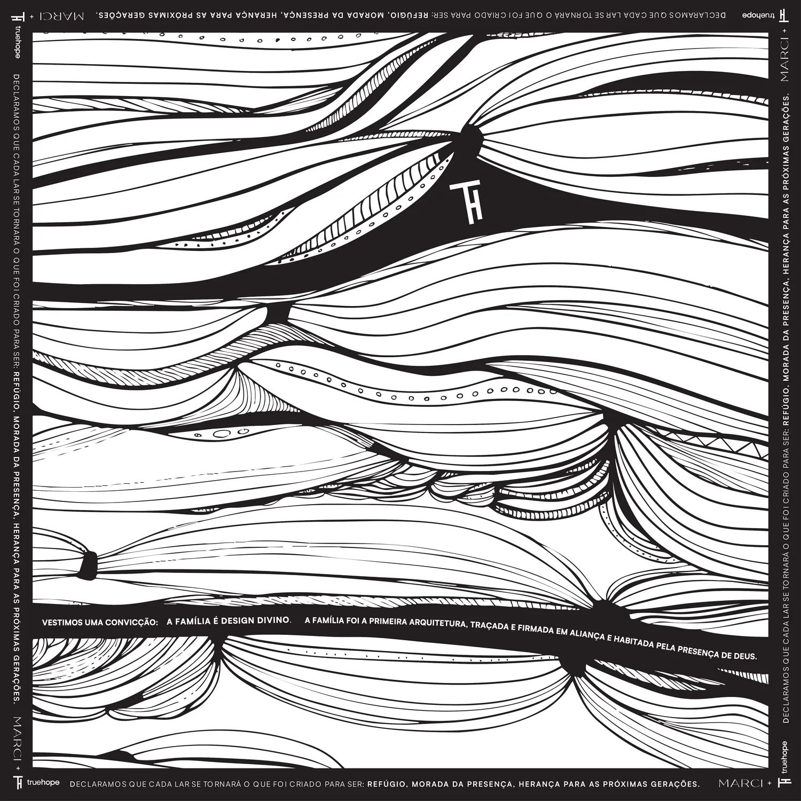

01
Brisa
Respiração. Você percebe que a peça está viva, mas nunca desvia do texto. É o que está no site.
A ondulação vem de um filtro SVG (feTurbulence + feDisplacementMap): a turbulência empurra os pixels e as linhas desenhadas dobram como tecido. Em volta dela, três oscilações de períodos diferentes (subir, girar, inclinar) que nunca coincidem. Sem biblioteca extra — só o GSAP que a página já carrega.

01
Respiração. Você percebe que a peça está viva, mas nunca desvia do texto. É o que está no site.
02
Movimento evidente, quase de bandeira. Chama atenção para a peça — e distorce mais a tipografia da borda.
03
No limite do perceptível. Preserva a legibilidade da borda por completo — some se a pessoa não estiver olhando.